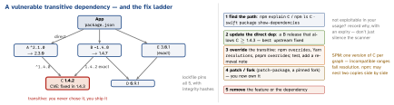

engineering · folio
In one line: Every dependency is code you ship, cannot fully read, and must keep updating. Semver ranges say what you accept; the lockfile records what you got (every transitive package, exact version + hash) so every machine and CI builds the same tree. Choose libraries by maintenance, size, licence and exit cost, update in small automated steps, and remember that most of your tree is transitive — you are responsible for packages you never chose.
Download PDF Print view LaTeX source


Package managers
| Tool | Lockfile | Model |
|---|---|---|
| SPM | Package.resolved | built into Xcode/swift; source + binaryTarget (XCFramework + checksum); one version per package |
| CocoaPods | Podfile.lock | Ruby; generates a workspace; trunk read-only from 2 Dec 2026 (existing pods still install) — RN still uses it |
| Carthage | Cartfile.resolved | builds frameworks, you link them; decentralised, rarely chosen now |
| npm | package-lock.json | nested node_modules: two versions can coexist |
| Yarn | yarn.lock | Berry adds Plug’n’Play; RN projects use nodeLinker: node-modules |
| pnpm | pnpm-lock.yaml | content-addressed store + symlinks; strict: undeclared (“phantom”) imports fail |
Semver and ranges
MAJOR.MINOR.PATCH= breaking . feature . fix;0.y.z: anything may change. A promise by humans, not a guarantee — tests decide.- npm:
^1.2.3=>=1.2.3 <2.0.0·^0.2.3=>=0.2.3 <0.3.0(caret treats the first non-zero as major) ·~1.2.3=>=1.2.3 <1.3.0·1.2.3exact. Pre-releases (2.0.0-beta.1) are skipped by ranges unless asked for. - SPM:
from: "1.2.3"=1.2.3..<2.0.0·.upToNextMinor(from:)=1.2.3..<1.3.0·exact:· branch/revision (not for releases). - Apps: pin native-heavy deps exactly (RN, SDKs) and let the lockfile pin the rest. Libraries: wide ranges, peers for shared singletons (
react,react-native).
Lockfile rules
Commit it (apps); CI installs from it (npm ci, pod install, resolved SPM) and fails if it drifts. Review lockfile diffs: a one-line change in package.json can move 200 transitive versions. A library’s lockfile is not published — consumers resolve its ranges themselves.
Example — ranges, override, SPM
// package.json (comments for the sheet only)
"dependencies": {
"react-native": "0.81.0", // exact: native, upgrade on purpose
"date-fns": "^4.1.0", // >=4.1.0 <5.0.0
"@example/analytics": "~2.3.1" // >=2.3.1 <2.4.0
},
"overrides": { "semver": "7.5.4" } // force a patched transitive
// Package.swift
.package(url: "https://example.com/a.git", from: "1.1.0")
// 1.1.0..<2.0.0
.package(url: "https://example.com/b.git",
.upToNextMinor(from: "0.9.2")) // 0.9.2..<0.10.0Remember
“Ranges say what you accept, the lockfile what you got; every dependency is yours to update — or remove.”
Choosing a library — the signals
- Maintenance: releases in the last months, issues and PRs answered, CI green, a changelog, honest semver; supports the current OS, Swift 6 / RN New Architecture, ships types.
- Bus factor: more than one active maintainer, or a company behind it; who fixes a CVE at 2 am?
- Size + cost: binary size delta (App Thinning Size Report, JS bundle analyser), transitive count, launch cost (dynamic frameworks), permissions and privacy manifest it brings.
- Need it? 20 lines of your own beat a package for a helper; platform APIs (
URLSessionasync/await,fetch,Intl) replace many classics. Exit cost: wrap it behind your interface.
Licences — what they cost an app
| MIT, BSD | permissive: keep copyright + licence text (Acknowledgements screen) |
| Apache-2.0 | permissive + patent grant; keep NOTICE; not GPLv2-compatible |
| MPL-2.0 | file-level copyleft: publish changes to its files only |
| LGPL | users must be able to relink a modified library — hard with static linking in a signed iOS app: legal review |
| GPL / AGPL | the combined app must ship as GPL source (AGPL: network use too) — a no for closed apps |
| no licence | all rights reserved: you may not use it |
Gate it in CI: a licence scanner emits SPDX ids, checked against an allow-list.
Vendor, update, remove
- Vendor (copy source/binary into the repo) for tiny, abandoned or patched code, or offline builds — you now own its updates and CVEs. Middle ground: pinned fork,
patch-package. - Update: Renovate / Dependabot PRs on a schedule; group patch + minor, majors one by one with the changelog read; automerge only low-risk groups on green CI. RN/Xcode upgrades are planned work.
- Remove: find imports, swap in the platform API, delete, check the lockfile and binary shrank;
knip/depcheckfind unused JS deps.
Traps
- Two copies of
reactin an RN monorepo → “Invalid hook call”: dedupe; libraries declare it as a peer. - “We pinned
^1.2.3” — a caret range is not a pin; the lockfile is. - Code relying on a transitive package it never declared — breaks under pnpm or the next update.